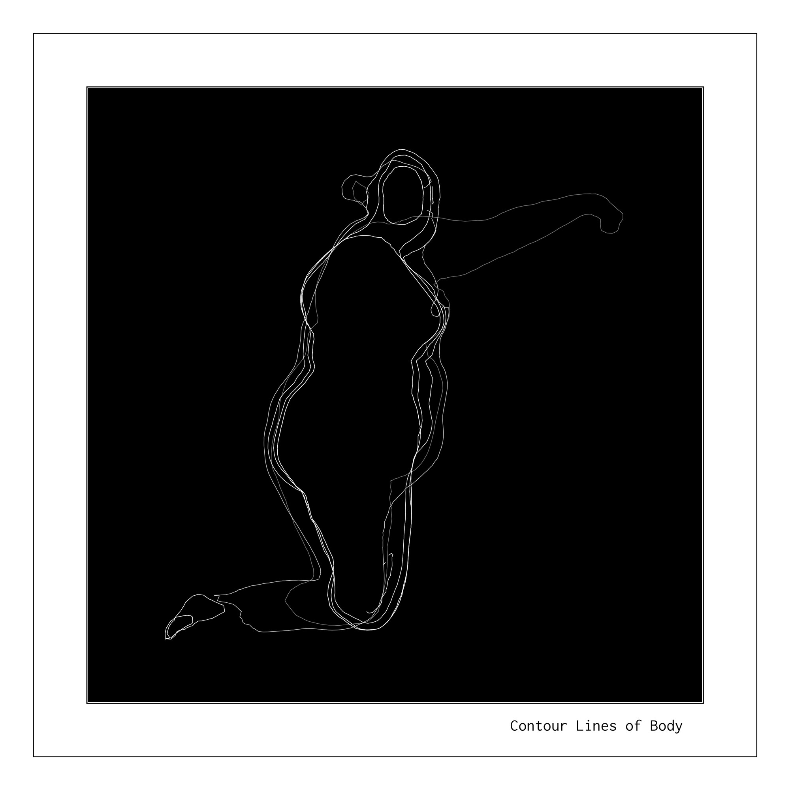
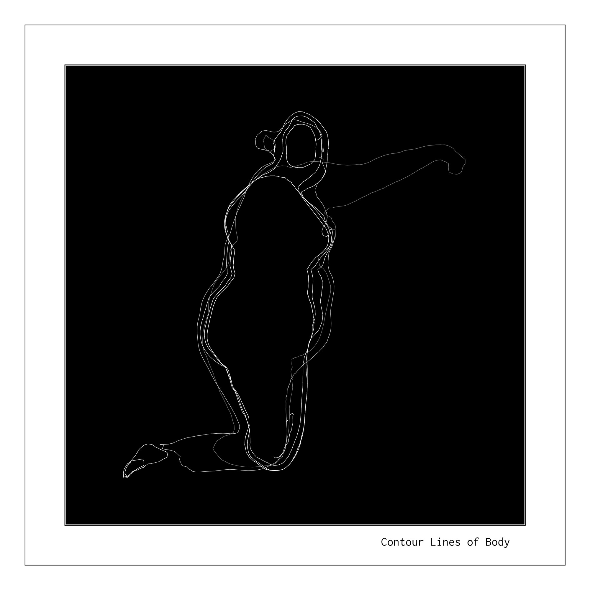
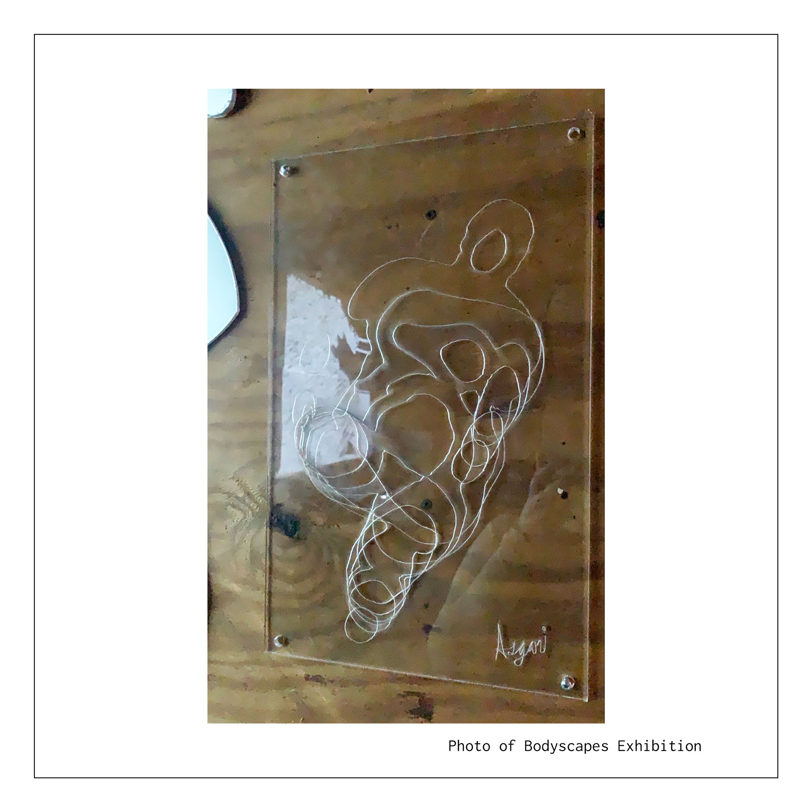
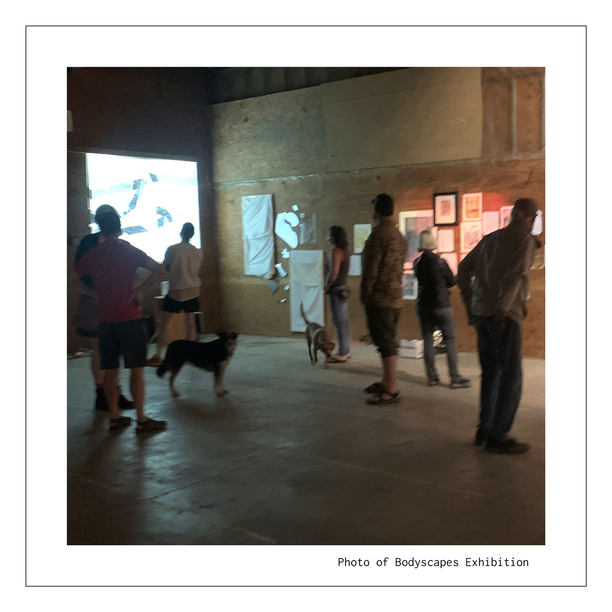
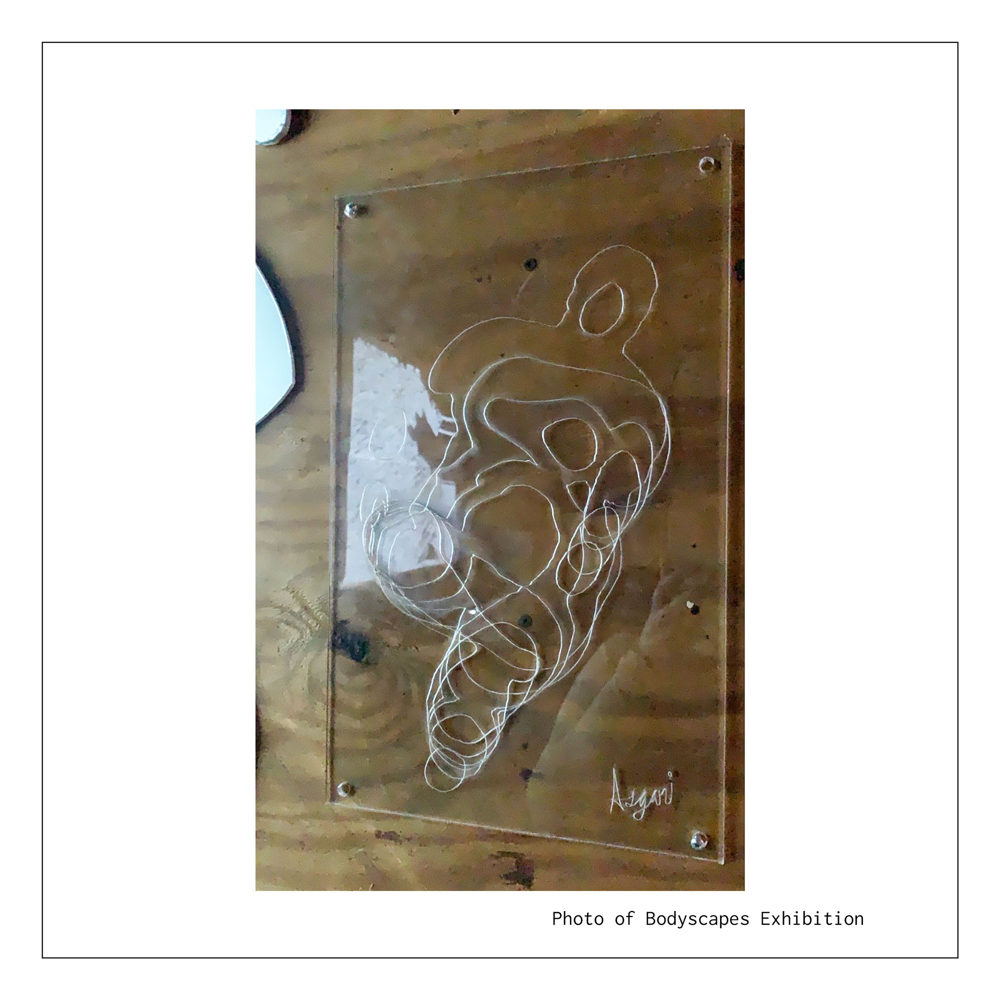
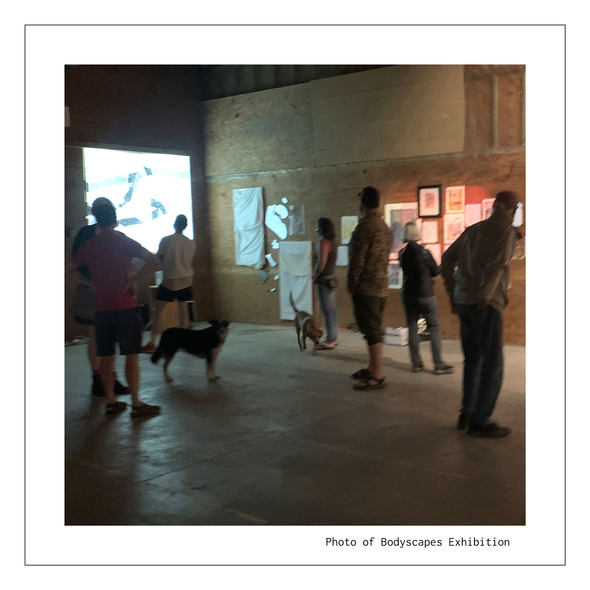

BodyScapes
Fall 2021
BodyScapes was commissioned for a multiartist exhibition displayed at a venue titled “The Soil Factory”.


 

 



The Body as a Vessel
This project served to re-examine the way bodies are contextualized/viewed. I created the series by asking several participants of various body types to position themselves in unusual stances, sculpting profiles with their bodies. I then took photogrammetric 3D scans and carefully selected several contours from the scan. While some contours where hand cut in alpha core that was painted silver, others were engraved with a laser cutter into acrylic. Bodies became unrecognizable. They could not be compared to one another. Instead, they were viewed as topographical maps. Bodies were uniquely shaped vessels of function.